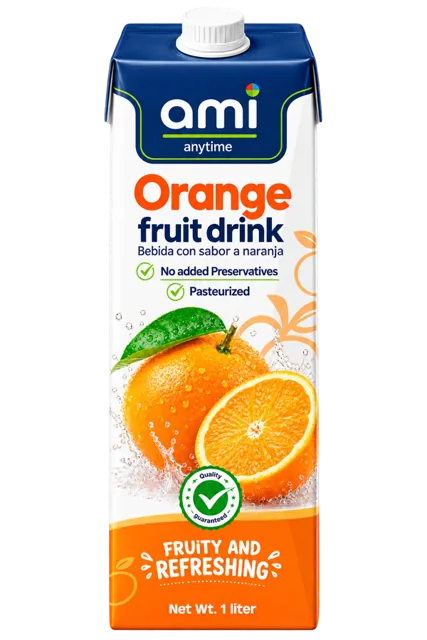
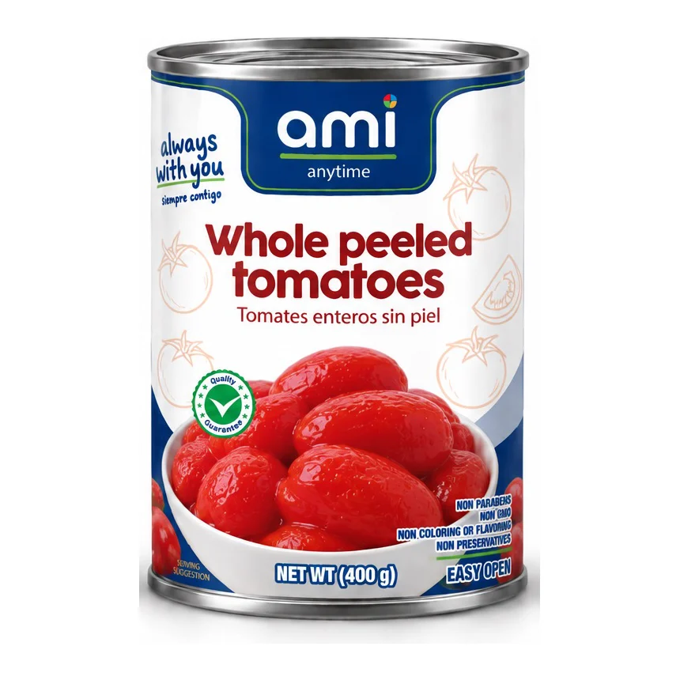
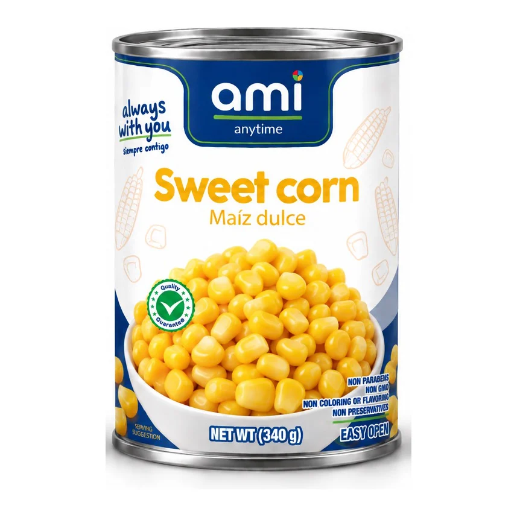
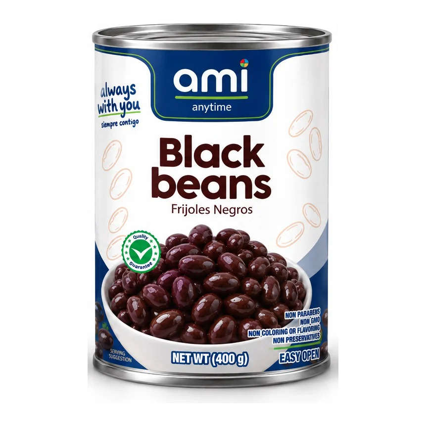
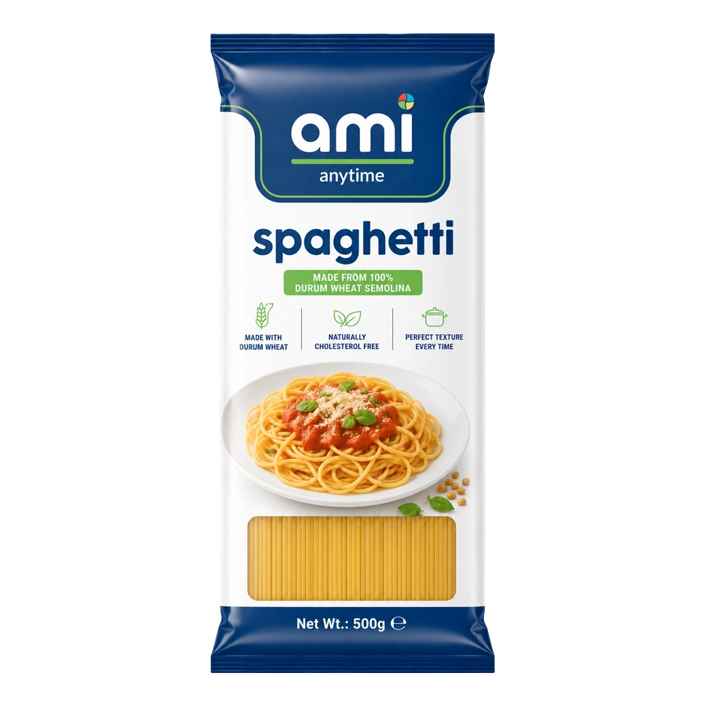
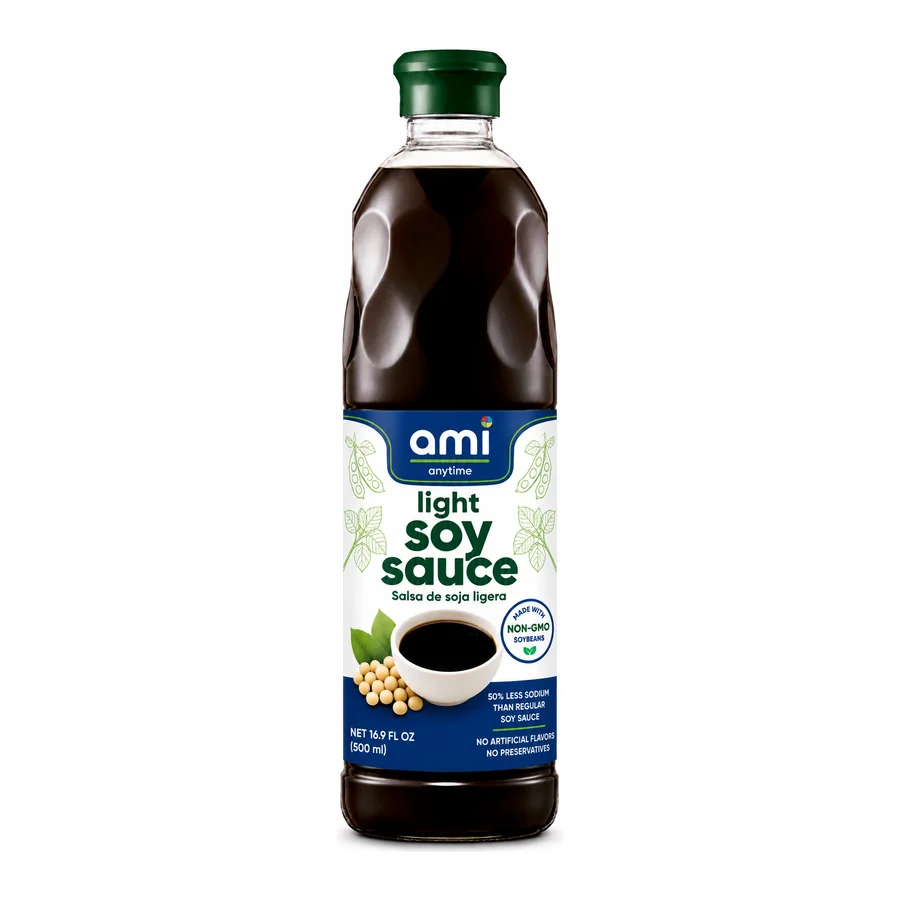
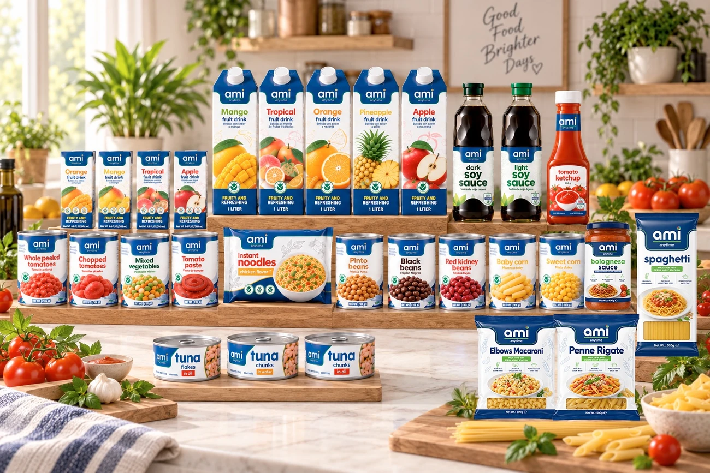
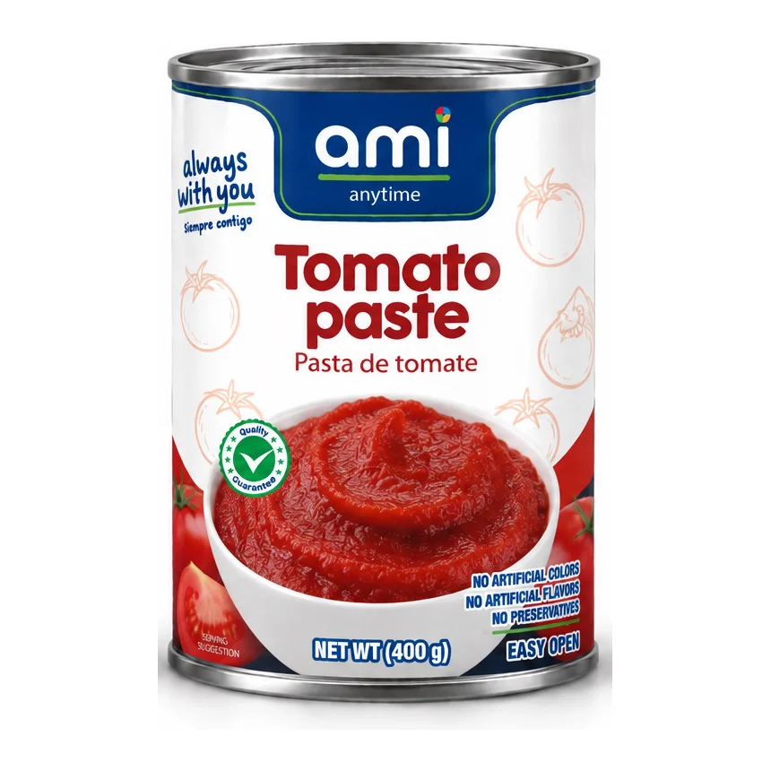
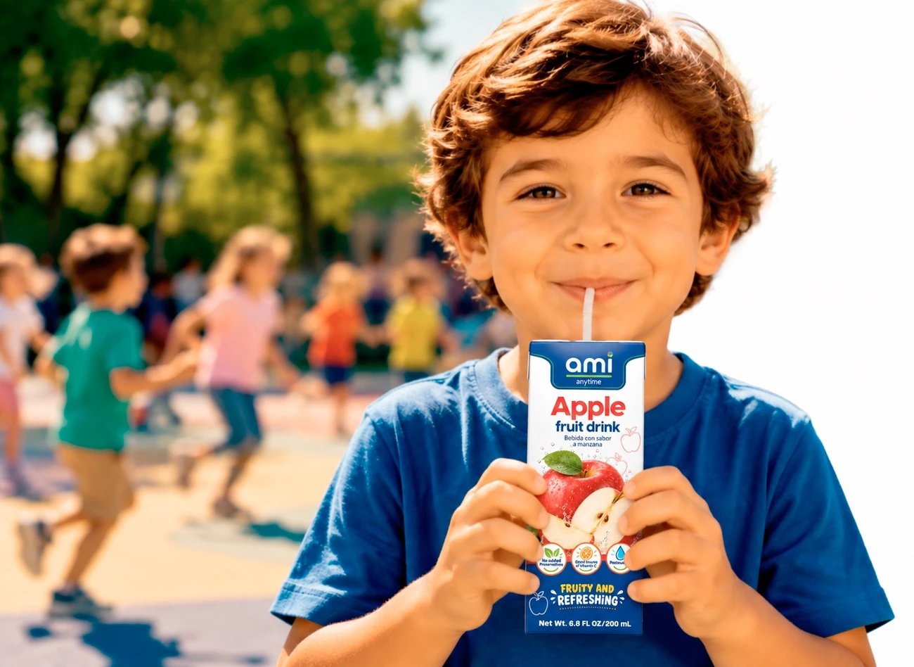

Alimentos de todos los días,
para comidas de verdad.
ami anytime™ reúne productos conocidos bajo una marca clara: con abastecimiento internacional, desarrollo mercado por mercado y precios pensados para el presupuesto diario.






¿Qué estás buscando?
Explora el portafolio ami
Explora los productos ami por categoría, tamaño y sabor.
Una opción internacional para el presupuesto diario.
El consumidor cotidiano no debería tener que elegir entre una experiencia de marca internacional y un precio que funcione en casa. ami cierra esa brecha con una identidad reconocible, un surtido disciplinado y valor justo para cada mercado.

Productos esenciales para cada despensa
Alimentos conocidos para comidas, almuerzos y momentos de todos los días.
Una banda. Fácil de reconocer.
La banda azul de ami mantiene unida a la familia. Los colores por categoría ayudan a encontrar y organizar los productos en el pasillo.



Convierte la despensa en una comida
Recetas sencillas con productos ami e ingredientes que probablemente ya tienes.


La compañía detrás de ami
ami es desarrollada por American Foods International, una distribuidora de alimentos con sede en Miami que trabaja con cadenas, restaurantes y hoteles en Estados Unidos, Latinoamérica, el Caribe y Asia. American Foods reúne abastecimiento internacional, consolidación, documentación, etiquetado y desarrollo de marcas propias en una sola plataforma transfronteriza.
Desarrolla tu mercado con ami
Descubre cómo ami puede trabajar con cadenas y distribuidores para desarrollar una marca de valor reconocible y multicategoría.